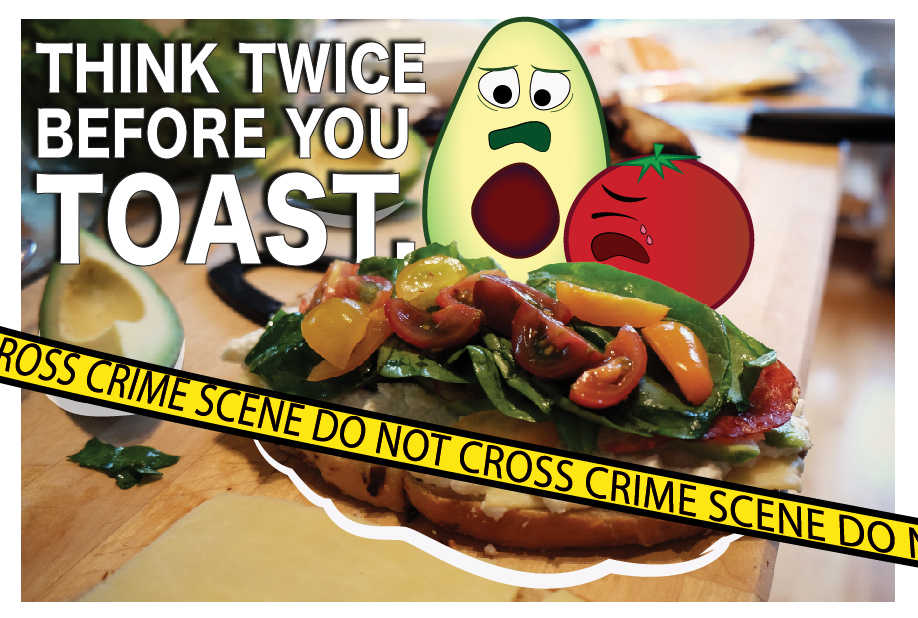

I had always wanted to learn how to use Adobe Illustrator. Thanks to this project, I finally learned just the bare minimum to create a crime scene of culinary proportions.
In this project, I was able to showcase my sympathy for all the lives lost to the trendy phenomena that is avocado toast. Where did it come from? Who decided that avocados were the tastiest when shucked and spread on toast. We may never know...
Kelsey also makes videos and takes photographs.